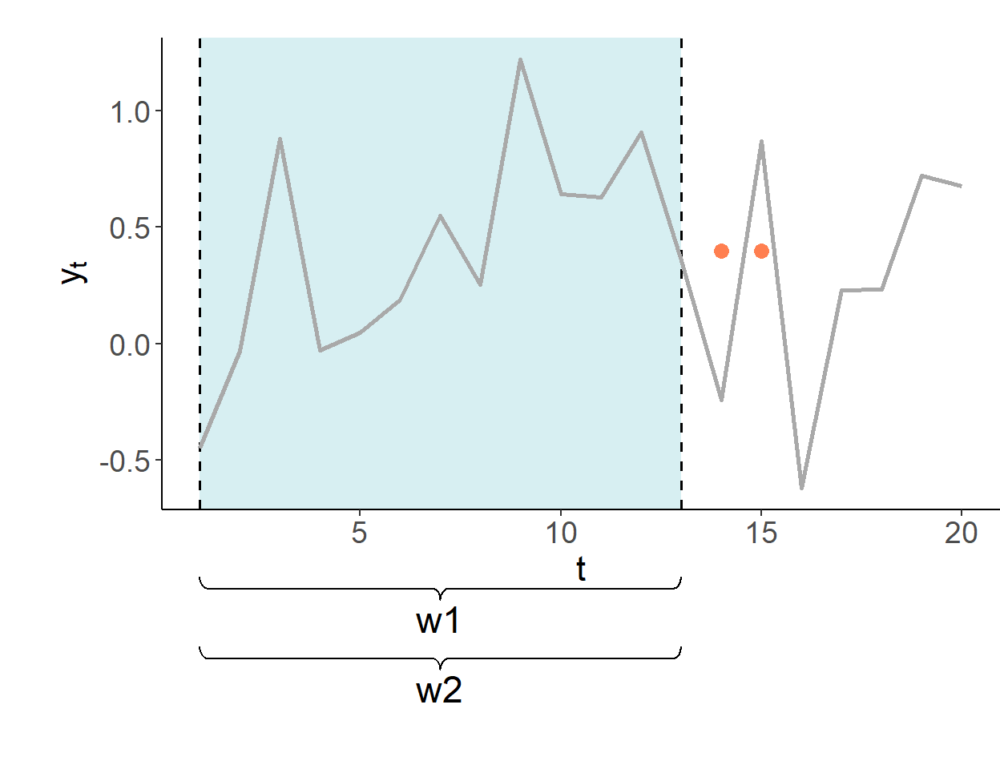

Chapter 3 – Forecasting Methods and Routines

3.1 Point Forecast and Forecast Error
A forecast is a random variable which has some distribution and, thus, moments. The simplest form of a forecast is a point forecast, which usually is the mean of the distribution, but can also be the median of the distribution, depending on a forecaster’s choice of the loss function.
Let \(\hat{y}_{t+h|t}=E(y_{t+h}|\Omega_{t};\hat{\theta})\) be a point forecast7 We use ‘hat’ to emphasize that the forecast is based on parameter estimates rather than true parameters of the model. The subscript \(t+h|t\) indicates that the forecast is made using information set in period \(t\). for period \(t+h\) made in period \(t\), that is, using using the available information at the time, \(\Omega_t\). This is our ‘best guess’ about the actual realization of the random variable in period \(t+h\), \(y_{t+h}\). The difference between the realization and the forecast of the random variable is the forecast error. That is, \[e_{t+h|t} = y_{t+h} - \hat{y}_{t+h|t}\]
The more accurate is the forecast the smaller is the forecast error. And while on average the forecast error is zero (assuming the forecast is unbiased), the forecast error variance is non-zero, implying uncertainty surrounding point forecast.
3.2 Forecast Uncertainty
There are three key sources of uncertainty that manifest into a forecast error. First, we never know the true model, so we make a guess about the most suitable model for time series analysis, leading to model uncertainty.
Second, we don’t know the true parameters of the model. Instead, using a subset of history (available to us) we estimate the parameters, which are prone to a sampling error due to parameter uncertainty.
Finally, whether or not we well approximate the true model, and whether or not we succeed in generating precise parameter estimates, our forecasts may still be inaccurate because of information uncertainty for all those factors that have never happened in the past, and only characterize the future.
To illustrate the foregoing, we can decompose forecast error into its three components: \[\begin{aligned} e_{t+h} & = \big[y_{t+h}-E(y_{t+h}|\Omega_{t})\big]\;~~\text{(information uncertainty)} \\ & + \big[E(y_{t+h}|\Omega_{t}) - E(y_{t+h}|\Omega_{t};\theta)\big]\;~~\text{(model uncertainty)} \\ & + \big[E(y_{t+h}|\Omega_{t};\theta)-E(y_{t+h}|\Omega_{t};\hat{\theta})\big]\;~~\text{(parameter uncertainty)} \end{aligned}\]
where \(E(y_{t+h}|\Omega_{t};\theta)\) indicates that the forecast is made using a parametric model, and \(E(y_{t+h}|\Omega_{t};\hat{\theta})\) indicates that the parameters of the model are estimated.
To the extent that at least the information uncertainty cannot be avoided, a forecaster is bound to commit forecast errors. The aim is to minimize the ‘cost’ associated with these errors. This is achieved by minimizing the expected loss function.
3.3 Loss Function
A loss function, \(L(e_{t+h|t})\), may take many different forms so long as it satisfies the following properties: \[\begin{aligned} & L(e_{t+h|t}) = 0,\;~~\forall\;e_{t+h|t} = 0 \\ & L(e_{t+h|t}) \geq 0,\;~~\forall\;e_{t+h|t} \neq 0 \\ & L(e_{t+h|t}^{(i)}) > L(e_{t+h|t}^{(j)}),\;~~\forall\;|e_{t+h|t}^{(i)}| > |e_{t+h|t}^{(j)}| \end{aligned}\]
Two commonly used symmetric8 There are also asymmetric loss functions, which are relevant in instances when it makes sense to ‘penalize’ the forecast error more so in one direction than another. loss functions are absolute and quadratic loss functions: \[\begin{aligned} & L{(e_{t+h|t})} = |e_{t+h|t}|\;~~\text{(absolute loss function)} \\ & L{(e_{t+h|t})} = (e_{t+h|t})^2\;~~\text{(quadratic loss function)} \end{aligned}\]
The quadratic loss function is arguably the most popular loss function, partly because we already select models based on ‘in-sample’ quadratic loss (i.e. by minimizing the sum of squared residuals).
3.4 Optimal Forecast
Optimal forecast is the forecast that minimizes the expected loss: \[\min_{\hat{y}_{t+h|t}} E\left[L\left(e_{t+h|t}\right)\right] = \min_{\hat{y}_{t+h|t}} E\left[L\left(y_{t+h}-\hat{y}_{t+h|t}\right)\right].\]
Assuming the quadratic loss function: \[\begin{aligned} E\left[L(e_{t+h|t})\right] & = E(e_{t+h|t}^2) = E(y_{t+h} - \hat{y}_{t+h|t})^2 \\ & = E(y_{t+h}^2)-2E(y_{t+h})\hat{y}_{t+h|t} + \hat{y}_{t+h|t}^2 \end{aligned}\]
By solving the optimization problem it follows that: \[\hat{y}_{t+h|t} = E(y_{t+h})\]
If we assume that the conditional density of a forecast is a normal density, then: \(E(y_{t+h}) = \mu_{t+h}\).
Thus, the optimal point forecast under the quadratic loss is the mean of the forecast distribution (for reference, the optimal point forecast under the absolute loss is the median of the distribution).
3.5 Pseudo-Forecasting Routine
Forecast accuracy should only be determined by considering how well a model performs on data not used in estimation. But to assess forecast accuracy we need access to the data, typically from future time periods, that was not used in estimation. This leads to the so-called ‘pseudo forecasting’ routine. This routine involves splitting the available data into two segments referred to as ‘in-sample’ and ‘out-of-sample’. The in-sample segment of a series is also known as the ‘estimation set’ or the ‘training set’. The out-of-sample segment of a series is also known as the ‘hold-out set’ or the ‘test set’.
Thus, we make the so-called ‘genuine’ forecasts using only the information from the estimation set, and assess the accuracy of these forecasts in an out-of-sample setting.
Because forecasting is often performed in a time series context, the estimation set typically predates the hold-out set. In non-dynamic settings such chronological ordering may not be necessary, however.
There are different forecasting schemes for updating the information set in the pseudo-forecasting routine. These are: recursive, rolling, and fixed.
The recursive forecasting environment uses a sequence of expanding windows to update model estimates and the information set.
The rolling forecasting environment uses a sequence of rolling windows of the same size to update model estimates and the information set.
The fixed forecasting environment uses one fixed window for model estimates, and only updates the information set.

The forecasts are made in period 13 for periods 14 and onward. The first estimation window of the pseudo-forecasting routine covers periods one–through–ten. In this illustration, shaded segments illustrate the range of the data used for estimation of model parameters.
3.6 Forecast Assessment
To assess the accuracy of a forecast method, we compare forecast errors from two (or more) methods to each other. Consider a time series, \(\{y_t\}\), with a total of \(T\) observations. To generate genuine forecasts, we decide on the size of the in-sample set consisting of \(R\) observations so that \(R < T\) (typically, \(R \approx 0.75T\)), and the out-of-sample set consisting of \(P\) observations, where \(P=T-R-h+1\) and where \(h\) is the forecast horizon.
For example, if we are interested in one-step-ahead forecast assessment, this way we will produce a sequence of forecasts: \(\{y_{R+1|R},y_{R+2|{R+1}},\ldots,y_{T|{T-1}}\}\) for \(\{Y_{R+1},Y_{R+2},\ldots,Y_{T}\}\).
Forecast errors, \(e_{R+j} = y_{R+j} - y_{R+j|{R+j-1}}\), then can be computed for \(j = 1,\ldots,T-R\).
Two most commonly applied measures of forecast accuracy are the mean absolute forecast error (MAFE) and the root mean squared forecast error (RMSFE): \[\begin{aligned} \text{MAFE} = & \frac{1}{P}\sum_{i=1}^{P}|e_i|\\ \text{RMSFE} = & \sqrt{\frac{1}{P}\sum_{i=1}^{P}e_i^2} \end{aligned}\] The lower is the measure of accuracy associated with a given method, the better this method performs in generating accurate forecasts. As noted earlier, ‘better’ does not mean ‘without errors’.
Forecast errors of a ‘good’ forecasting method will have the following properties:
- zero mean; otherwise, the forecasts are biased.
- no correlation with the forecasts; otherwise, there is information left that should be used in computing forecasts.
- no serial correlation among one-step-ahead forecast errors. Note that \(k\)-step-ahead forecasts, for \(k>1\), can be, and usually are, serially correlated.
Any forecasting method that does not satisfy these properties has a potential to be improved.
The aforementioned three desired properties of forecast errors are, in effect, hypotheses that can be tested. This can be done in a basic regression setting.
3.6.1 Unbiasedness
Testing \(E(e_{t+h|t})=0\). Set up a regression: \[e_{t+h|t} = \alpha+\upsilon_{t+h},\;~~t = R,\ldots,T-h,\] where \(R\) is the estimation window size, \(T\) is the sample size, and \(h\) is the forecast horizon length. The null of zero-mean forecast error is equivalent of testing \(H_0: \alpha = 0\) in the OLS setting. For \(h\)-step-ahead forecast errors, when \(h>1\), autocorrelation consistent standard errors should be used.
3.6.2 Efficiency
Testing \(Cov(e_{t+h|t},\hat{y}_{t+h|t})=0\). Set up a regression: \[e_{t+h|t} = \alpha + \beta \hat{y}_{t+h|t} + \upsilon_{t+h},\;~~t = R,\ldots,T-h.\] The null of forecast error independence of the information set is equivalent of testing \(H_0: \beta = 0\) in the OLS setting. For \(h\)-step-ahead forecast errors, when \(h>1\), autocorrelation consistent standard errors should be used.
3.6.3 No Autocorrelation
Testing \(Cov(e_{t+1|t},e_{t|t-1})=0\). Set up a regression: \[e_{t+1|t} = \alpha + \gamma e_{t|t-1} + \upsilon_{t+1},\;~~t = R+1,\ldots,T-1.\] The null of no forecast error autocorrelation is equivalent of testing \(H_0: \gamma = 0\) in the OLS setting.
Page built: 2022-10-29 using R version 4.1.2 (2021-11-01)